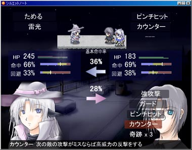

シルバーセカンド開発日誌
シルノプレイしてない方はちょっと分からないと思いますが
サユキの中の人。思いっきりネタバレしてるけど気にしない！
元とあんまり変わってないけど
サユキの中に入るならこんな感じかなと。
シルエットノート追加シナリオ公開しました。
アンケート（Launcher.exeから投稿可能です）の方も
第二期として新たに募集中なので、前回投票した方も
よろしければまた送って下さいますと嬉しいです。
これまで頂いた内容を見る限り、前回よりはかねがね好評のようです。
初期よりも開発において無駄な手間が省かれていたので、その点も
本質部分へ注力できる良い影響になっていたのかもしれません。
ただサユキの扱いについては全てが手遅れだったので
二次創作か何かで気分を晴らしてください！
という感じですごめんなさい！
もともとサユキは優先順位の低い位置づけだったのですが、
二次創作などの影響で思い入れの強い人が増えてしまったようで
追加シナリオを公開するには時間が経ちすぎていたのかもしれません。
でも、ここまでキャラクターを愛してくださっている方々には
感謝の気持ちでいっぱいです、いつもありがとうございます。
基本的に、面白くないキャラを
変にしてしまうのはいつも変わりません。
アルバートもカッコイイキャラなのに常にひどい扱いです。
ただ今回のサユキもそうですけれど、変キャラの方が
いきいきとしたキャラを描きやすいので作者としては好みです。
（そういえば、女キャラを全力で変キャラにしたのは
今回が初めてかもしれません）
ゲロインも今どき珍しくないですから
もっとインパクトのあるヒロインを
考えないといけませんね、ってどこまで行くんだろう！
今は、次は何をしようかと、
やる気が果てた頭でぼちぼちと考えています。
お笑いネタを使い果たしたのでシル見7はちょっと遠そうです。
シナリオとかあんまり考えなくていいゲーム作りたい！
とりあえず、しばらくはウルフRPGエディターをいじる予定です。
そのうち機能評価版みたいなのを公開しようと思っています。■
2007-07-24 (火) シルノ追加シナリオ公開▼
肝試しのシーズンです。シルノ追加シナリオ中でいきなり
ヒロインが恐くなってもビックリしないようにしてください。
頑張ってちょっぴりホラーっぽくしようと思ったら
ほぼ全員のテスターさんからやりすぎって言われたので配布開始の
数時間前に今さらマイルドになるように色々修正かけてます。
スッゲェホラーが楽しみたかった人は残念！
シルエットノート追加シナリオはちょっぴりホラーで
セクシーでバイオレンスでカッコイイシーン満載です！
有料ゲームだし子供の人はきっと買わないだろうなあって思って
作っていたのでその辺覚悟しておいてください！
最近身近だったサイレントヒルシリーズに影響されまくりなのが
丸分かりかもしれないんですが色々と間違ってます！
これからはいきなりホラー展開にするのはやめようと思いました。
ところでゲームのテストプレイしてると自分のノートPCのCPU温度が
やっぱり100度近くまで上がるんですが、
調べてみたらどうも自分の機種は公式にこういう仕様みたいです。
キーボードの表面温度は不明ですが
結構アチアチです、低温やけどが心配。
シルノ追加シナリオは今日の深夜あたり最終チェックが終了し次第、
配布開始しようと思います。
夏休みに入っている良い子の皆さんは明日の朝あたりサイトを
チェックしてみてください。■
2007-07-22 (日) HDD破壊ジンクス発動▼
追加シナリオテストプレイしてもらったら
「冬村サユキが気持ち悪すぎです」って言われました。
仕方ないので忠告メッセージ入れておきました、
みなさん覚悟してください！追加シナリオはちょっとホラーです。
それはそうと、なんと「ゲーム公開直前にHDDが壊れるジンクス」
が発動してしまいました。
とりあえずシルエットノートのデータはバックアップしてるので、
仮に復旧に失敗しても2日しか巻き戻らないため平気だったのですが、
まさか本当にこのタイミングで起きるとは！
皆さんもバックアップはしっかり取るように気を付けましょう。
これは危険なタイミングだった。
でも、長年の経験でつちかった慎重さが窮地を救ったのだと思えば
自分も成長したというものです。
暑いし湿度も高いのでゲーム開発してらっしゃる方はお気を付けて。
調整は終わっているので、公開日7月25日は守れそうです！
皆さんお楽しみに！アンド肝試し的覚悟も忘れずに！現在、シルノ追加シナリオはスタッフの人に一人ずつ順番に
テストプレイしてもらっているところです。
バグと、システム的にあったら便利そうな部分の追加と、
シナリオ的にマズそうなところも含めて修正案が出たので
ボチボチ頑張り中です。
当初予定日の7/25に間に合わなければ延期するかもしれませんが
とりあえずはこの日までの公開を目指して頑張ります。
■
2007-07-10 (火) シルノ開発状況7▼
シカゴ勤務魔法少女セントマリア、魔法少女だけど武器が銃。
出番無し。エンディング絵にでも使うかなあコレ。
シルエットノート追加シナリオ公開予定日決定！
夏休みシーズンに入るしちょうどいいやということで、
7/25頃にシルエットノート追加シナリオ公開します！
ということで、ボチボチ頑張っていきたいと思います。
ちなみに、追加シナリオは製品版のデータを
そのままダウンロードして上書き→ランチャーでゲーム解凍すると
遊べる仕組みになっておりますので、
現在お手持ちのライセンスキーはそのまま使用できます。
ヤバいメモしてなかったー！という方は、
「シルエットノート」フォルダ内の「Launcher.exe」を起動すると、
過去に入れたライセンスキーを確認することができます。
（当然ですが、一度もライセンス入れてない方は表示されません）
それはそうとメインに使ってるノートパソコンのCPU温度が
90℃くらいまで上がってエラいことになってます。
どおりでキーボード打ってたら手がやけどしそうになるワケだ！■
2007-07-05 (木) シルノ開発状況6▼
擬人化クロウが出たり謎の魔法少女と戦ったり
色々と楽しい場面増加中です。
いよいよシルノ追加シナリオのゴールが
チラリと見え始めて来ました。
追加シナリオなのに育成シミュレーションを入れたり
新しいバトルシステムを追加したりと色々といっぱい
やりすぎた感がしないでもない今日この頃ですが、
新しいことをするのはやっぱり面白い！のでこのまま突き進み中です。
基幹のシステム無視して途中から戦闘システム変わるとか、
個人製作のゲームだからこそできる荒技。
それはそうと、アクセス元サイトを見ていたら
英語版wikipediaのシルフェイド見聞録からリンクが貼ってありました。
アクションゲームやシューティングゲームだったらまだしも、
こんな日本語だらけのゲームよく遊べるなあって思います。
どんなアメリケンオタクさんが書いたのか気になるところです。
↓
英語版wikipedia シルフェイド見聞録
（「日本製のRPGやビジュアルノベルによくあるロマンチックな要素は
ほとんどありません」など、日本語版とは違う視点で書いてあります、
英語のお勉強がてら、読んでみるのはいかが？）
これが終わったら、しばらくゆっくりしたいです。
7年前から願っていたレベルのプログラミング技術が
やっと身に付いてきたので、ツクールでは
できなかったことにも挑戦したいなあと思ってます。 ■
2007-06-30 (土) シルノ開発状況5▼
シル人物録というよりはただの落書き女主人公。
クールなキャラを想像して遊んでいたのは
自分だけではないはず！
シルエットノート追加シナリオは
終わりが見えるにつれて猛スピードアップ中です。
ゲーム開発はあとどれくらいかかるのか見えない中盤辺りが
一番辛いんだろうなあとということに気付いた気温32度の室内、
暑ーい！！
追加シナリオの進行状況は今のところこんな感じです。
・シナリオ … 95％
・ツクールへの打ち込み作業 … 20％
・バトルシステム … 70％
・バトル用グラフィック … 60％
・新しいエンディング … 0％
・テストプレイ … 0％
ということで、まだ結構かかりそうです。
8月のコンパクにまた新しいゲーム出したいなあとも
思ったりするのですが、果たして間に合うことやら。■
2007-06-22 (金) シルノ進行状況4▼ |
シルフェイド人物録、
今回はセルリア先生。
私がチャットで
「セルリアって誰だっけ」
と発言したことがあるのは
いい思い出です。
最近ずっとシルノの
追加シナリオ作成に
注力してます。
結局この感じだと、
約3シークエンス分の
追加になりそうです。
なんと量が1.4倍！
（計7シク→10シク）
A～Eの全パーツ入手と
スケイルED見たことが
追加シナリオへの
条件になる予定ですので
集めてない方は今の内に
どうぞ。公開は7月？
|
それとシルエットノート二次創作作品の
選抜もぼちぼち進めています。■
2007-06-01 (金) シルノ進行状況3▼
シルエットノート追加シナリオ開発中。
裏シナリオでは空気だった冬村サユキが
追加シナリオではそれなりに出番増加中です。
（たぶんイヤな方向に）
この追加シナリオですが、裏シークエンス4（スケイルエンド）の
続きの物語となっています。
とある都合で主人公シシト本人が魔物と応戦したり、
リス君にムチでしごかれたりしながら
様々な戦いに巻き込まれていきます。という予定。
ネタが残っている分だけしっかり作って
しっかりまとめたいと思います。
それと、問い合わせがあったのですが、
ツクールモバイルが終了してシェパード捜査録が
公開されなくなりましたが、今後エンターブレインさんが
別の方法で公開するのかどうかという点については
いまだ連絡が来ていない状況です。
なのでシェパード捜査録のPC版への移植は現在未定ですので、
ご了承下さい。■
2007-05-17 (木) シルノ進行状況2▼
「追跡者」との戦い。新バトルシステムです。
WILLと距離がなくなった代わりに、
命中率の扱いに気を使う必要がある内容になりました。
敵HPが異常に高いのはテスト中だから。
ということで回り道しながらですが、約2週間で
育成システムとバトルシステムがほぼ完成しました。
あとは残りシナリオを作ってぼちぼちシルノ追加シナリオを公開です、
といってもたぶん来月以降になると思いますけれど。
シルエットノートの追加シークエンスは、最終的に
約2.5シークエンス分くらいの分量になると思います（今1.5くらい）。
今月は色々と用事が入ったのでさらに開発が遅れるかもしれませんが、
何はともあれ、満足行くまで練ってから出すことには
変わりませんので、どうかお楽しみに。
それにしても新システム作ってるときの
自分の生き生きっぷりと来たらもう！
やっぱりあくまでゲーム作る方が好きなのであって、
小説家や漫画家にはきっとなれないなあと思う今日この頃です。
次からは、システムのブラシアップもしつつ
シナリオ方面に移っていきたいと思います。
あと、シェパード捜査録の感想が来ないと愚痴ってたら
とうとう感想いただけて感動でむせび泣いています、
稚拙な作品ですが遊んでくださった方、
ありがとうございました！ うっうっ。
Copyright © SmokingWOLF / Silver Second
 カテゴリ: シルノ
カテゴリ: シルノ カテゴリ: シルノ
カテゴリ: シルノ